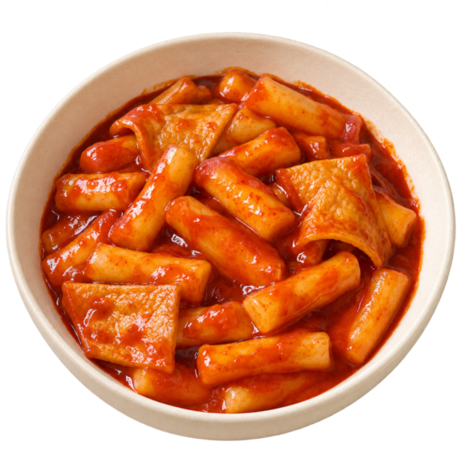
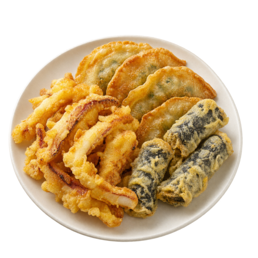

떡볶이 먹다가
눈 맞았습니다
한 접시 더 시켰다가, 분식집까지 차렸어요.
창업 이야기
첫 만남
떡볶이를 좋아한다는 공통점으로 친구가 동네 분식집에서 소개해줬어요.
한 사람은 김말이를 먹기 직전에 소스에 콕 찍었고, 다른 한 사람은 나오자마자 푹 담갔어요.
각자 자기 방식대로 먹어보라며 김말이를 하나씩 건넸는데, 둘 다 상대가 준 게 맛있었어요.
다음 약속
그날 헤어지고 얼마 지나지 않아 메시지가 왔어요.
“다음엔 제가 좋아하는 떡볶이집도 가볼래요?”
입덕볶이의 시작
결혼 후 집에서 끓인 떡볶이를 친구들에게 내놓기 시작했어요.
“너라면 이거 돈 주고도 먹을 거야?”라고 물었더니, 친구는 대답 대신 남은 떡볶이도 싸달라고 했어요.
그렇게 입덕볶이가 시작됐어요.
콕 찍어도, 푹 담가도 맛있게.
쫄깃한 밀떡에 매콤달콤한 소스를 넉넉히 담았어요.
지금도 새 소스를 만들면 김말이 두 개부터 꺼내요. 하나는 콕 찍고, 하나는 푹 담가요. 둘 다 맛있어야 손님한테 내놓거든요.
- 첫입 오리지널 떡볶이
-

찍먹 모둠튀김